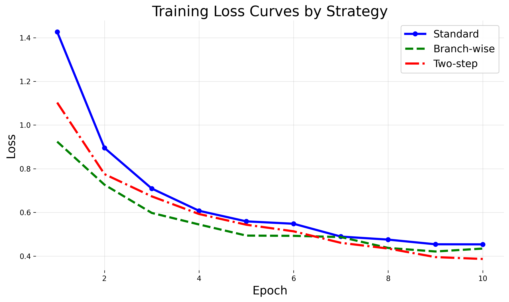

Training Strategies and Usage#
This section covers the comprehensive suite of training strategies available in the Dendritic Modeling Framework, from standard backpropagation to bio-inspired local learning algorithms and large-scale distributed training.


Figure 8 Training Strategies Comparison: Performance comparison of standard, branch-wise, and two-step training strategies showing convergence characteristics and final performance levels.#
Overview#
The framework provides multiple training strategies to suit different research goals and computational constraints:
Standard Training: Traditional end-to-end backpropagation
Bio-inspired Strategies: Layer-wise, branch-wise, and local credit assignment
Specialized Methods: Two-step training, voltage stabilization
Distributed Training: FSDP for large-scale models
Custom Strategies: Extensible framework for novel approaches
Training Strategy Framework#
All training strategies in the framework follow a common interface that allows for easy switching and comparison:
train:
learning_strategy: "standard" # or "layer_wise", "two_step", etc.
trainer:
epochs: 100
batch_size: 64
learning_rate: 0.001
# Strategy-specific parameters
strategy_params:
key: value
This design enables researchers to: - Compare different learning algorithms on the same task - Gradually transition from standard to bio-inspired training - Combine strategies for hybrid approaches - Extend with custom implementations
Standard Training#
Traditional end-to-end backpropagation for fast, reliable training.
Configuration#
train:
learning_strategy: "standard"
trainer:
epochs: 100
batch_size: 64
learning_rate: 0.001
optimizer: "adam"
scheduler: "cosine"
early_stopping: true
patience: 10
Features#
Full end-to-end optimization: All parameters updated simultaneously
Standard optimizers: Adam, SGD, AdamW, RMSprop
Learning rate scheduling: Cosine, exponential, step, plateau
Early stopping: Automatic training termination
Gradient clipping: Prevent exploding gradients
When to Use#
Quick prototyping: Fast iteration and testing
Baseline comparisons: Standard ML benchmark
Small to medium models: When computational resources allow
Well-understood tasks: Classification, regression
Performance Optimizations#
train:
learning_strategy: "standard"
trainer:
# Performance optimizations
enable_amp: true # Mixed precision training
gradient_accumulation_steps: 4 # Larger effective batch size
dataloader_num_workers: 8 # Parallel data loading
pin_memory: true # Faster GPU transfers
Bio-inspired Training Strategies#
Strategies that capture aspects of biological learning mechanisms.
Layer-wise Training#
Sequential training of network layers, inspired by developmental biology.
train:
learning_strategy: "layer_wise"
strategy_params:
epochs_per_layer: 20 # Train each layer for 20 epochs
freeze_trained_layers: true # Keep trained layers frozen
layer_wise_lr_decay: 0.9 # Reduce LR for deeper layers
How it works: 1. Train only the first layer while keeping others frozen 2. Once converged, freeze first layer and train second layer 3. Continue sequentially through all layers 4. Optional final fine-tuning of all layers
Benefits: - Reduces memory usage for deep networks - More stable training for very deep dendrites - Biological plausibility (developmental learning) - Enhanced gradient flow in deep branches
Use cases: - Very deep dendritic networks - Limited computational resources - Studying layer-wise learning dynamics
Branch-wise Training#
Local credit assignment at the dendritic branch level.
train:
learning_strategy: "branch_wise"
strategy_params:
local_learning_rate: 0.01 # LR for local updates
global_learning_rate: 0.001 # LR for global updates
local_epochs: 5 # Local updates per global step
branch_independence: 0.8 # How independent branches are
Mechanism: - Each dendritic branch maintains local learning objectives - Branches update based on local error signals - Periodic global coordination aligns branch objectives - Mimics biological local plasticity
Benefits: - High biological realism - Parallelizable across branches - Robust to local damage/noise - Novel learning dynamics
Two-step Training#
Local pre-training followed by global fine-tuning.
train:
learning_strategy: "two_step"
strategy_params:
pretrain_epochs: 50 # Local pre-training phase
finetune_epochs: 30 # Global fine-tuning phase
pretrain_learning_rate: 0.01 # Higher LR for pre-training
finetune_learning_rate: 0.001 # Lower LR for fine-tuning
freeze_pretrained: false # Allow updates during fine-tuning
Phase 1 - Local Pre-training: - Each component learns local representations - Unsupervised or self-supervised objectives - High learning rates for fast convergence
Phase 2 - Global Fine-tuning: - End-to-end supervised training - Lower learning rates for stability - Fine-tune pre-trained representations
Benefits: - Stable training for complex architectures - Superior initialization to random - Combines unsupervised and supervised learning - Biologically plausible (development + experience)
Two-step KL Training#
Two-step training with KL divergence regularization.
train:
learning_strategy: "two_step_kl"
strategy_params:
pretrain_epochs: 50
finetune_epochs: 30
kl_weight: 0.1 # KL regularization strength
kl_schedule: "linear" # How KL weight changes
target_distribution: "uniform" # Target for KL divergence
Additional Features: - KL divergence encourages specific activation patterns - Regularizes against overfitting during fine-tuning - Can target different activation distributions - Helps maintain biological realism
Voltage Stabilization Training#
Warm-up phase to stabilize dendritic voltages prior to main training.
train:
learning_strategy: "voltage_stabilization"
strategy_params:
stabilization_epochs: 10 # Warm-up phase duration
target_voltage: 0.5 # Target average voltage
stabilization_lr: 0.1 # High LR for quick stabilization
main_learning_rate: 0.001 # Standard LR post-stabilization
Purpose: - Prevents initial training instability - Ensures biological voltage ranges - Particularly important for shunting inhibition - Improves convergence in deep dendritic networks
Use cases: - Networks with shunting inhibition - Deep dendritic architectures - When experiencing training instability
Advanced Optimization Techniques#
Split Parameter Optimization#
Different optimization strategies for excitatory and inhibitory parameters.
train:
trainer:
split_params: true
excitatory_optimizer:
type: "adam"
lr: 0.001
weight_decay: 0.0001
inhibitory_optimizer:
type: "sgd"
lr: 0.01
momentum: 0.9
Benefits: - Excitatory and inhibitory neurons have different dynamics - Allows for biologically-motivated learning rules - Can improve training stability - Enables asymmetric regularization
Adaptive Learning Rates#
Learning rate schedules adapted to dendritic networks.
train:
trainer:
scheduler: "dendritic_adaptive"
scheduler_params:
base_lr: 0.001
branch_lr_factor: 0.1 # Distal branches learn slower
inhibitory_lr_factor: 2.0 # Inhibitory faster
adaptation_window: 100 # Adaptation frequency
Gradient Scaling and Clipping#
train:
trainer:
gradient_clipping: true
max_grad_norm: 1.0
gradient_scaling:
method: "dendritic_aware" # Scale by branch depth
scale_factor: 2.0
Distributed Training with FSDP#
For large-scale models requiring multiple GPUs or nodes.
Basic FSDP Configuration#
train:
use_fsdp: true
fsdp_config:
mixed_precision: true
sharding_strategy: "full" # "full", "grad_op", "no_shard"
cpu_offload: false # Keep parameters on GPU
backward_prefetch: true # Optimize communication
limit_all_gathers: true # Memory optimization
Advanced FSDP Settings#
train:
fsdp_config:
# Memory management
cpu_offload: true # Offload to CPU when memory-constrained
offload_params: true
offload_optimizer: true
# Communication optimization
backward_prefetch: "backward_post"
forward_prefetch: false
limit_all_gathers: true
# Precision settings
mixed_precision: true
mixed_precision_param_dtype: "float16"
mixed_precision_reduce_dtype: "float16"
mixed_precision_buffer_dtype: "float16"
Multi-node Training#
# Launch distributed training across nodes
torchrun --nnodes=4 --nproc_per_node=8 \
--master_addr=node0 --master_port=29500 \
train_experiments_fsdp.py config.yaml
FSDP Performance Optimization#
train:
fsdp_config:
# For maximum performance
sharding_strategy: "full"
mixed_precision: true
cpu_offload: false
backward_prefetch: "backward_post"
# For maximum memory efficiency
sharding_strategy: "full"
mixed_precision: true
cpu_offload: true
gradient_checkpointing: true
Memory Management Strategies#
Gradient Checkpointing#
Trade computation for memory by recomputing activations.
train:
memory_management:
gradient_checkpointing: true
checkpoint_ratio: 0.5 # Checkpoint every 2nd layer
Gradient Accumulation#
Simulate larger batch sizes with limited memory.
train:
trainer:
batch_size: 32 # Physical batch size
gradient_accumulation_steps: 4 # Effective batch size = 128
Mixed Precision Training#
Use float16 for training while maintaining float32 precision where needed.
train:
trainer:
enable_amp: true
grad_scaler_init_scale: 65536.0
grad_scaler_growth_factor: 2.0
Custom Training Strategies#
The framework allows for easy extension with custom training strategies.
Creating Custom Strategies#
from dendritic_modeling.training.base import BaseTrainingStrategy
class MyCustomStrategy(BaseTrainingStrategy):
def __init__(self, custom_param=1.0):
super().__init__()
self.custom_param = custom_param
def training_step(self, batch, model, optimizer):
# Implement custom training logic
loss = self.compute_custom_loss(batch, model)
return loss
def compute_custom_loss(self, batch, model):
# Custom loss computation
pass
Register the strategy:
from dendritic_modeling.core.factory import register_strategy
@register_strategy("my_custom")
class MyCustomStrategy(BaseTrainingStrategy):
# Implementation
Use in configuration:
train:
learning_strategy: "my_custom"
strategy_params:
custom_param: 2.0
Example Custom Strategies#
Hebbian Learning:
class HebbianStrategy(BaseTrainingStrategy):
def training_step(self, batch, model, optimizer):
# Implement Hebbian learning rule
x, y = batch
activations = model.get_activations(x)
hebbian_updates = self.compute_hebbian_updates(activations)
model.apply_hebbian_updates(hebbian_updates)
Contrastive Learning:
class ContrastiveStrategy(BaseTrainingStrategy):
def training_step(self, batch, model, optimizer):
# Implement contrastive divergence
positive_phase = model.forward(batch)
negative_phase = model.generate_negative_samples()
loss = self.contrastive_loss(positive_phase, negative_phase)
return loss
Performance Monitoring and Debugging#
Training Metrics#
train:
monitoring:
log_frequency: 100 # Log every 100 steps
metrics:
- "loss"
- "accuracy"
- "gradient_norm"
- "learning_rate"
- "memory_usage"
Profiling Training#
train:
profiling:
enabled: true
profile_memory: true
profile_compute: true
output_dir: "./profiling_results"
Early Stopping and Checkpointing#
train:
trainer:
early_stopping: true
patience: 10 # Stop at 10 epochs without progress
min_delta: 0.001 # Minimum progress threshold
- checkpointing:
save_best: true # Save best model save_frequency: 10 # Save every 10 epochs keep_last_n: 3 # Keep last 3 checkpoints
Best Practices#
Choosing Training Strategies#
Use Standard Training when: - Baseline comparisons needed - Fast prototyping required - Standard ML tasks - Computational resources abundant
Use Bio-inspired Training when: - Studying biological learning - Deep dendritic networks - Memory constraints exist - Novel learning dynamics desired
Use FSDP Training when: - Model size > 1B parameters - Multiple GPUs available - Distributed computation needed - Maximum scaling required
Common Training Issues#
Convergence Problems: - Try voltage stabilization for shunting inhibition - Use gradient clipping for deep dendrites - Consider layer-wise training for stability
Memory Issues: - Enable gradient checkpointing - Use gradient accumulation - Try CPU offloading with FSDP
Performance Issues: - Enable mixed precision training - Optimize data loading pipeline - Use appropriate batch sizes
Hyperparameter Guidelines#
Learning Rates: - Standard training: 0.001 - 0.01 - Bio-inspired: 0.01 - 0.1 (often higher) - Fine-tuning: 0.0001 - 0.001
Batch Sizes: - Small models: 32 - 128 - Medium models: 64 - 256 - Large models: 128 - 512 (with accumulation)
Training Duration: - Simple tasks: 50 - 100 epochs - Complex tasks: 100 - 500 epochs - Bio-inspired: Often requires more epochs
Next Steps#
Explore specific training approaches:
Try standard training: Start with strategies
Explore bio-inspired methods: Learn about layer-wise and branch-wise training
Scale up: Master distributed training with FSDP
Optimize performance: Check Performance, Speed, and Efficiency
Create custom strategies: Extend with custom_training
See also
Network Architectures and Design - Choosing the right architecture for your training strategy
../configuration/index - Complete training configuration options
Troubleshooting Guide - Solutions for common training issues